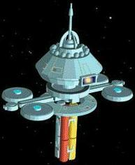

|
|
Classe Regula |
|
|||
|  |
Come per le sue antenate, anche le stazioni spaziali di classe Regula
hanno avuto la loro nascita motivata da necessità impellenti nel campo civile,
militare e scientifico. Il modello che le precedeva, il vecchio tipo
K, era ormai inadeguato a supportare la quantità e la
qualità del lavoro richiesto. Regula è una stazione estremamente versatile e, con poche opportune
varianti, può adeguarsi alle più svariate necessità di impiego.
La principale ragione del successo della classe Regula è la sua
estrema versatilità. I suoi 120 componenti modulari possono essere ricombinati e
completamente riconfigurati in breve tempo in una qualunque Base, e quindi
destinati a tutt'altra funzione.
Sia che vengano destinati a impieghi privati, civili o militari, i progetti di
costruzione di una Regula devono comunque essere approvati dalla
Flotta
Stellare, dal momento che è proprio la
Flotta
Stellare ad accollarsi la maggior
parte degli oneri per la sua realizzazione a cui partecipano la Chiokis Starship
Construction e la Rantura Shipping Lines. La
Flotta
Stellare, tuttavia,
possiede, ed è direttamente responsabile, soltanto dei tipi
Invictus e
Informant. Tutte le altre stazioni sono di proprietà di corporazioni, o
cedute dalla
Flotta
Stellare in affitto a privati con contratti a lungo termine.
In tutti i casi è la
Flotta
Stellare a provvedere alla sistemazione nelle orbite
richieste delle stazioni, nonché alla manutenzione degli impianti di supporto e
approvvigionamento. Per questo onere gliene deriva una rendita in ragione del
tipo di stazione. In più, i proprietari di stazioni del tipo
Administrator
e Artisan devono versare, in ragione dei profitti, una quota annuale del
2%. Inoltre, l'1% per cento di tutte le merci prodotte viene destinato dalla
Flotta
Stellare all'Ufficio delle Colonie, per supportare la nascita dei nuovi
insediamenti.
Le perdite di Stazioni spaziali sono relativamente poche: tre del tipo
Invictus (gli avamposti 665, 524 e 573) e un
Investigator, l'Othello
1, distrutto mentre il personale era occupato in uno studio segreto per il
Comando della
Flotta
Stellare. Benché non confermate, alcune voci suggeriscono
che l'Othello 1 stesse conducendo esperimenti sulla protomateria e un
difetto di un macchinario potrebbe aver causato la deflagrazione di un prototipo
di un dispositivo
Genesis; benché i sensori a lungo raggio abbiano
individuato uno strano aumento di radiazioni nei pressi dell'ultima posizione
nota dell'Othello 1, le squadre di soccorso giunte in loco non hanno
trovato né sopravvissuti né alcuna traccia della stazione stessa.
La negligenza è stata la causa della distruzione dell'avamposto 665: un gruppo
di cadetti dell'Accademia stava partecipando ad un controllo dell'efficienza
degli armamenti della stazione quando un cadetto ha azionato accidentalmente il
sovraccarico di una batteria di phaser; prima che la batteria potesse essere
disattivata, una reazione a catena ha distrutto la base. Le circostanze della
distruzione degli avamposti 524 e 573 rimangono classificate, si sa comunque che
sono state distrutte circa nello stesso periodo e stavano operando nella zona
del Triangolo per ordine della base stellare 10.
I tipi principali delle stazioni di classe Regula sono i seguenti.
Invictus - Avamposto orbitale di difesa Disegnata per la difesa; la maggior parte di queste stazioni sono posizionate lungo la zona di confine con l'Impero Romulano e il territorio organiano. Dopo l'incidente di V'ger, tre nuove stazioni di questo tipo sono posizionate attorno alla Terra.
Artisan - Centro industriale orbitale Strettamente industriale, permette la produzione in gravità zero di materiali di ogni tipo a basso costo, realizzata cinque anni dopo la prima Invictus, si è rivelata una dei prodotti Chiokis-Rantura che ha fruttato il maggior profitto.Administrator - Centro amministrativo orbitale Disegnata all'origine per servire da centro amministrativo, si è dimostrata estremamente versatile potendo essere adattata come centro per conferenze a livello diplomatico, luogo di incontri a livello galattico, archivio governativo e persino come complesso di appartamenti per uso privato.
Informant - Sistema di sorveglianza da spazio profondo Destinata alla sezione informazioni, di appartenenza alla Flotta Stellare, questo tipo di stazione svolge, il più discretamente possibile, un attento lavoro di raccolta dati, avvalendosi anche di sensori a lungo raggio. In pratica, svolge il lavoro di spionaggio e di coordinamento.Harmony - Stazione ricreativa La prima stazione di questo tipo (chiamata Treasure Trove 1) è stata prodotta per facilitare i rapporti con le Colonie di Orione, nonché per trarre alti utili dalla sua gestione. Con l'approvazione dell'Ufficio della Federazione per il Commercio Interstellare, è stata quindi venduta ad una corporazione di Orione, che l'ha trasformata in un complesso molto esclusivo comprendente sale da gioco e intrattenimenti senza eguali in ogni altro luogo della galassia. Impressionata dai notevoli profitti realizzati nei primi due anni di vita della Treasure Trove 1, la corporazione privata Leeper-Fell ha acquistato la seconda stazione Regula Harmony, la Centauri Pleasureplex 1 e l'ha collocata nel sistema di Al Rijil.
Mercy - Centro medico orbitale Disegnata per servire da ospedale d'emergenza, si è rivelata estremamente utile in tutti i casi di epidemie o disastri.Terminus - Installazione penale orbitale Le informazioni su questo tipo di stazione sono classificate. Si presume che questo tipo di stazioni siano destinate a centri di confino e di interrogatorio per quegli agenti del servizio di spionaggio o altri indesiderati individui sorpresi all'interno dello spazio della Federazione.
 Laboratorio spaziale nel settore Mutara, nei pressi di
Regula. Verso la fine del XXIII secolo la dottoressa Carol Marcus è a
capo di un gruppo di scienziati che sviluppano il progetto
Genesis.
Molto probabilmente il laboratorio viene distrutto quando viene
attivato il dispositivo
Genesis e la
materia di cui era composto contribuisce alla formazione di Genesis.
Laboratorio spaziale nel settore Mutara, nei pressi di
Regula. Verso la fine del XXIII secolo la dottoressa Carol Marcus è a
capo di un gruppo di scienziati che sviluppano il progetto
Genesis.
Molto probabilmente il laboratorio viene distrutto quando viene
attivato il dispositivo
Genesis e la
materia di cui era composto contribuisce alla formazione di Genesis.